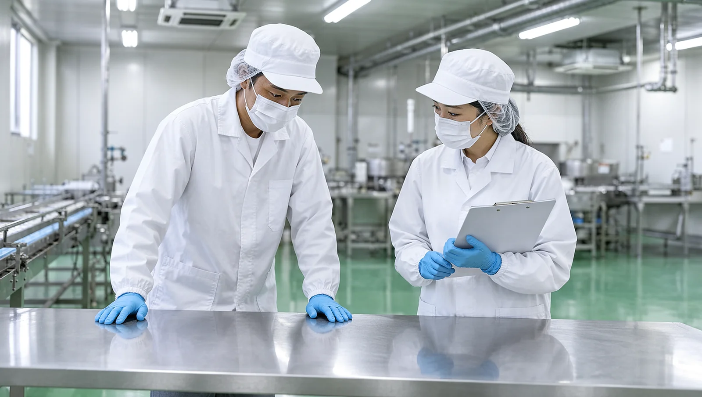
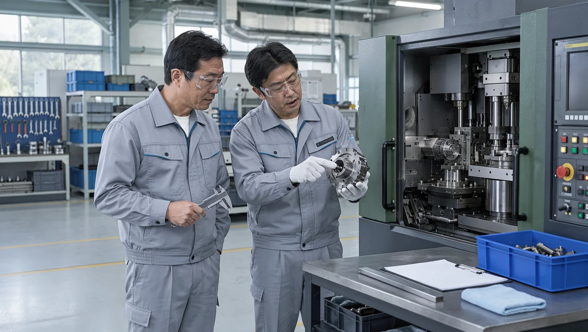

作業の内容
どの製品の、どの工程を担当するのか。
食品製造の採用をご検討の企業様へ
早朝からの仕込み、製造ラインでの作業、衛生ルール。食品づくりの現場で働くイメージを、採用前に共有できていますか。条件に合う候補者の情報を確認し、実際の働き方を面接で話しましょう。
登録・人材情報・動画の確認・オンライン面接まで無料。
条件に合う候補者がいる場合にご案内します。


画像はAI生成のイメージです。実在の候補者・導入企業ではありません。
動画で確認日本語の受け答えを知る
面接まで無料見て、話してから判断
LINEで相談まず希望条件を伝える
SELECTくんで、検討の一歩を
食品製造といっても、原料の準備、加工、盛り付け、包装など仕事はさまざまです。担当する作業、勤務の開始と終了、現場の温度や服装など、働く一日を具体的に説明することが大切です。SELECTくんで人材情報と動画を確認し、面接で本人の希望を聞いてください。対象業務・在留資格・候補者状況は個別に確認します。
採用前に、確かめたいこと
どの製品の、どの工程を担当するのか。
始業・終業時刻と、通勤方法の見通し。
服装、手順、温度など、現場で守るルール。
相談から検討まで
任せたい作業と、希望する経験を整理します。
勤務時間や勤務地、作業環境を分かる範囲でお知らせください。
面接で一日の流れを説明し、本人の希望と照合します。
情報・動画・オンライン面接を通じて、企業様ご自身で採用をご判断いただけます。
こんなときの採用相談に
料金について
採用の検討を始める段階で、
候補者を知るための費用はかかりません。
1人あたり・税別内定後、詳しい人材情報をご提供する際に発生する料金です。
VISA申請・登録支援などの費用は、上記20万円に含まれません。必要な手続きや費用は採用条件に応じて個別にご確認ください。
ご相談の前に
実際の勤務時間や通勤条件をお知らせください。本人の希望や必要な条件を個別に確認し、該当者がいる場合にご案内します。
希望する経験としてお伝えください。候補者の情報は個別に異なるため、具体的な知識や自社の手順への理解は面接等でご確認ください。
対象となる業務や在留資格の条件は個別の確認が必要です。製品の種類と、実際に担当する作業を具体的にお知らせください。
外国人採用をご検討の企業様へ
職種・仕事内容、勤務地、必要人数・希望時期をお知らせください。条件に合う候補者がいる場合、人材情報と動画をご案内します。
登録・人材情報・動画の確認・オンライン面接まで無料。
条件に合う候補者がいる場合にご案内します。
友だち追加後、採用の希望条件をご回答ください。
LINE登録だけでお申し込みにはなりません。
人材のご案内や採用・入社時期を保証するものではありません。